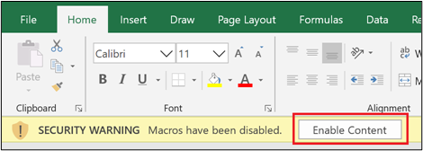
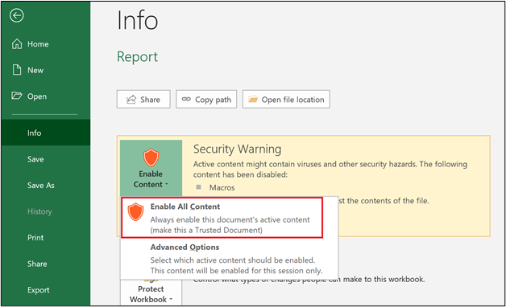

Real-World Hook
You inherited a finance workbook with external links, macros, and protected sheets, and you need to make it safe and usable before anyone else opens it.
Common Misconception
⚠️ Many learners treat workbook settings as "admin" features, but exam tasks often depend on knowing exactly which setting controls macros, protection, or recalculation.
Mastery Steps
1. Select the Developer tab, and then, in the Code group, select Visual Basic.
2. If the Project Explorer does not display, select the View tab, and then select Project Explorer.
3. In the Project Explorer, right-click the source workbook, and then click Insert > Module.
4. In the new module, paste the macro code.
5. Save the workbook as a macro-enabled workbook.
6. Open the destination workbook, and then, in the Developer tab, in the Code group, select Visual Basic.
7. In the Project Explorer, right-click the destination workbook, and then click Insert > Module.
8. In the new module, paste the macro code.
9. Save the workbook as a macro-enabled workbook.
1. Open both workbooks (the destination and source workbooks).
2. In the destination workbook, select the cell in which you want to add the reference.
3. Enter an equal sign (=).
4. Select the source workbook, and then select the cell(s) you want to refer to.
5. Select Enter.
You’ll be automatically returned to the destination workbook. If the data in the source workbook is updated, it will be automatically updated in the destination workbook, too.
When you open a workbook with one or more macros, the SECURITY WARNING message bar displays with the Enable Content option. Select Enable Content to enable macros. The following screenshot depicts the SECURITY WARNING message bar with Enable Content highlighted.


Use Version History and formula calculation settings when shared workbooks or iterative models behave unexpectedly.
Worked Example
Use this domain as a checklist lesson. Start by opening a macro-enabled workbook, inspect the Trust Center settings, then note the difference between Protect Workbook, Protect Sheet, and Encrypt with Password.
Suggested objectives from the learning directory include copying macros between workbooks, referencing other workbooks, enabling macros, viewing previous versions, restricting editing, protecting structure, and configuring calculation options.
Teacher Tip
💡 Teach workbook settings as decision points: "What are we protecting, what are we automating, and what should happen when formulas recalculate?"
Follow-Up Question
If a workbook opens with formulas showing outdated results, would you check links, calculation settings, or workbook protection first, and why?